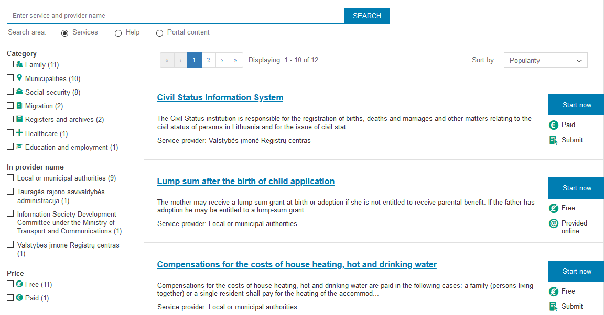
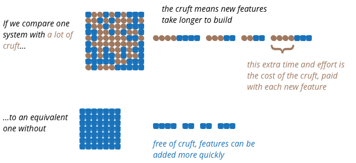

class: center, middle, main-title # Software operations and evolution --- ## Today - Course organization - 2nd assignment results are published - Content - Two true-ish stories - What goes into running and evolving a software system - Legacy systems and their challenges - Questions, ideas, comments - [Sli.do #VUSE1911](https://app.sli.do/event/vpgfoqwj) --- ## Service catalog  --- ## Service catalog: Operations - The catalog is informational and not very important -- - Support is provided during working hours (5 days/wk) -- - Occasionally something is not displayed properly, then: 1. Someone complains to the agency 1. Agency emails developers 1. Developers register a defect 1. Devlopers fix it within a week or two, or whenever convenient -- - Sometimes catalog goes down completely, then: 1. Either agency, or someone external notices 1. Agency calls developers 1. Developers restart the catalog within an hour or so --- ## Identity provider --- ## Identity provider: Operations - Login functionality is very important -- - 99.99% or better uptime required -- - Agency expects problems to be fixed before they become aware -- - Ad-hoc operations not an option --- ## Main differences - System criticality - In how much trouble are we in if it does not work? -- - System availability - "Most of the time" vs. 99.99% - SLAs --- ## Availability - Understood from a user's point of view -- - Requirements - Formal or informal - [Percentages translated to time](https://en.wikipedia.org/wiki/High_availability#Percentage_calculation) -- - Is the system *available* right now? -- - Let's say a system is - Not responding at all -- - Not responding for 10% of users -- - 1% of operations fail -- - Some operations take much longer than expected -- - One non-critical function does not work --- ## High availability - The higher the availability, the harder it is to achieve - Going from 98% to 99% is fairly easy - Going from 99.99% to 99.999% is much harder -- - Achieved through - No single point of failure (redundancy) -- - Reliable crossover (switching) -- - Failure detection (monitoring) -- - More on this: [Site reliability engineering](https://landing.google.com/sre/books/) --- ## Roles within an organization - Support - Answer user questions, help troubleshoot -- - Verify and triage incoming problem reports -- - Operations - Monitor if system is running in an acceptable way -- - Troubleshoot verified problem reports -- - Maintain operating environments -- - Development - Troubleshoot verified problem reports -- - Fix defects, prevent performance degradation -- - Add new features -- - Adapt to new environments, products and standards --- ## Maintenance lifecycle phase - Commonly perceived as fixing defects only -- - Includes all of the areas mentioned before (and more) -- - The most expensive part (around 60-80% TCO) -- - Out of this, ~80% is due to enhancements, not fixes --- ## Legacy software - Is useful and successful software -- that over time became a victim of its own success -- - "A system without tests" - Michael Feathers -- - Nobody knows in full what the system does or how it works - Change impact is difficult to estimate - Regression testing is complicated -- - This forces to optimize for risk reduction, rather than overall complexity - Suboptimal designs add accidental complexity -- - Complexity accumulates - Narrowing design space - Making comprehension harder --- ## Technical debt - A metaphor for explaining *accidental complexity* / *cruft* -- - Very useful for explaining things to non-technical people -- - Adding *technical debt* it is unavoidable -- - If we do nothing, maintainance will get increasingly complicated --- ## Impact of technical debt  .footnote[ <cite>Source: [Is High Quality Software Worth the Cost?](https://martinfowler.com/articles/is-quality-worth-cost.html)</cite> ] --- ## Things that help maintenance - Adding automated regression tests -- - Removing features -- - Refactoring - Applying a series of small transformations to code - In order to improve quality without changing function -- - Creating documentation -- All of the above take *time* and *effort* --- ## What to do with legacy systems? - Maintain *status quo* - run with minimal changes -- - Modernize incrementally while adding new features -- - Build a new facade and reuse existing components -- - Throw it away and replace with a new system -- Ultimately a joint business and IT decision --- ## Key takeaways - Different systems have different operational requirements -- - What is high availability and how to achieve it -- - Maintenance is vital to the long-term success of a system -- - What impact does technical debt have and how to reduce it --- ## Reading assignment Mandatory: - Article: [Is High Quality Software Worth the Cost? by Martin Fowler](https://martinfowler.com/articles/is-quality-worth-cost.html) - Wiki-like entry: [Technical Debt by Martin Fowler](https://martinfowler.com/bliki/TechnicalDebt.html) Recommended: - 40 min hands-on refactoring talk: [Succession by Katrina Owen](https://www.youtube.com/watch?v=59YClXmkCVM) - Book: [Site Reliability Engineering](https://landing.google.com/sre/books/) - Book: [Refactoring: Improving the Design of Existing Code](https://martinfowler.com/books/refactoring.html) --- class: middle, center # Questions? --- ## Next time One of these: - Guest lecture by an invited speaker - Starting your career in IT